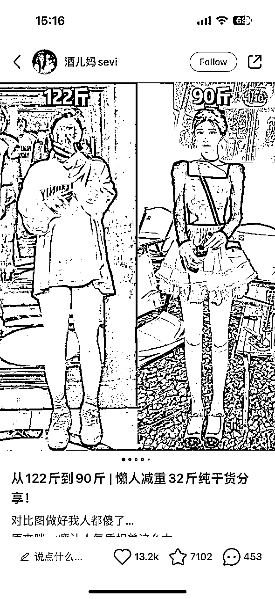

来源：https://hadad3oapn3.feishu.cn/docx/PpOHdPCzKoIQdoxQYIlc3bnvnMf
哈喽，大家好，我是李校长，校长会创始人，小红书头部MCN机构，高客单项目顶级操盘手，最近好多人都来问我如何才能做好小红书的内容搭建，今天给大家出了一篇关于小红书内容精细化运作的纯干货文章。
原因是这样的啊，前几天跟一个做医美行业的老板聊天，她的账号流量爆掉了，数据非常非常好，但是没有变现。我看了她的账号，她的笔记只做了科普的帖子，非常可惜。类似于像这种科普帖子有几篇大爆帖子的话，她就应该抓紧出人设笔记和强转化的笔记，但是就是因为她不懂笔记类型，我简单测算过，她每个月少赚大概百来万的利润，但是我只能默默的测算帮她做调整，怕她知道因为就这个点没理解，知道自己损失了那么多，更难受！！！
那么我今天给大家列举一些，什么是强转化文章以及写强转化文章的方法。
99%的人做小红书只需要4个软件
视频可以用剪映专业版
作图可以用稿定设计、美图秀秀
文案：文心一言
大家这里一定注意几个点：目前市面上的Chat gpt以及文心一言，写的文章一般来讲，正确的废话比较多，即便你特别会调教，也会有这样的弊端，所以写文案不能完全依赖Chat gpt和文心一言。
如果说你的行业以前在知乎上比较火的话，那么你一定记住，你的行业的好文章一定在知乎上。
稿定设计里面有大量的小红书模板
文心一言也可以产出大量高质量的文案：
主页账号作为账号的“门面担当”，不仅要清晰、美观、有辨识度，还要体现账号的人设、特色、加深用户的印象。
头像上要符合主页的整体风格，或者体现出我们的职业、身份、角色，比如：账号的定位，品牌logo、个人形象等。总结就是要美观、有辨识度！！
名字上，要简单好记，方便用户的搜索，名字要有辨识度，让人印象深刻，除此之外，可以体现自己的职能，让不认识你的人一下子就知道你是干什么的。切忌名字不知所云，一定要给用户一个关注你的价值。
咱们这里一定记住一个点:如果你做的是本地同城项目,比如你在武汉做月子会所,那么你的起名一定是武汉某某月子会所,这样就可以非常有效的圈本地同城用户,不至于流量分散到全国各地。
简介上，要体现我有什么不同，我是谁，我能给大家带来什么样的价值，与用户的需求相结合
简介里一定记得不能放任何的联系方式,如果放了会立马违规的,当然邮箱可以放,不过我们测下来,放邮箱其实没什么用。
背景上，可以补充简介的价值，体现出你的专业度，这里需要注意的是，背景图不要引流，背景图的尺寸：5:4，背景图最好与要求尺寸一致，如果尺寸不同会被系统自动裁剪，可能会丢失重要内容。而且背景图上茶后颜色会变深，所以背景图最好选择较为明亮的颜色。
下面给大家举个例子：
反面案例：
正面案例：
很明显，图一的四件套就设计的很拉胯，图二的主页模式更吸引人，给人的感受更加的专业，
那么账号搭建好了，如何去找对标呢？
1.人群相似
比如做轻医美的人群和需要美妆的人群是同一个人群,可以跨行去找对标
2.话题相似
比如二手奢包和二手手表的话题就可以借鉴,属于话题相似
3.变现相似
比如川藏旅游民宿和川藏线租车就符合变现相似,也可以相互借鉴
对标找好之后我们就要开始内容制作了
1.痛点卖点：用绝对的差异化/优势化卖点去戳中客户最痛的痛点
①本行客户的痛点：成交过程中客户最关心的点
②自身产品的卖点：直击客户的痛点，客户选择的理由
③营销的核心在于解决供需关系，供就是你的产品，需就是客户的需求
④做内容的核心在于将供和需无限放大
如果我这样讲,大家还不明白的话,那就通过销售和客户的聊天,可以提取到这些内容,比如说用户加了微信,问的第一个问题,就是用户的痛点,可以分析出来比例的,比如用户上来问价格的占了6成,问位置的占了2成,其他占了2成,那么我们出内容的时候就会知道,我们大部分的内容要围绕价格去做笔记。
拿我的头部驾校举个例子：
驾校的痛点很明显，价格、学车位置、拿证时间、如何避坑等等，都是用户关心的问题，那我们的卖点又是什么呢？
①收费透明，可以考一科付一科，服务不好可以拒付尾款
②整理全上海学车的地方，并且向客户说明我们都可以安排
③最快拿证时间，周末党拿证时间，学生党拿证时间
④针对于如何避坑，我们准备了50页的PDF文件《上海避坑指南》
这里的《上海避坑指南》就是一篇非常好的钩子了,大家一定记住,免费且有价值的东西才是真正的好钩子,如果大家都有,你送的东西和你的同行是一样的,那其实用户为了钩子去链接你的可能性会大大降低
价格：
基地：
时间：
避坑：
⑤谁是最清楚客户痛点的人？
毋庸置疑是销售。
⑥如何简单粗暴的找准痛点和卖点？
1.让销售把客户的问题进行一个数据统计，问的最多的几个问题就是客户的痛点
2.将痛点一条条拆解，结合自身情况整理出差异化/优势化的卖点（可以适当偏离事实）
还是接上面我说的点,用户问你的微信第一个问题就是痛点,那么也可以结合线下的沟通等等,凡是和用户的沟通,都可以梳理出来你这个行业的痛点痒点,每个行业用户关心的问题其实不多,也就是那么三五个问题而已
爆款文章
关键词seo：
1.搜索栏、话题、聚光后台、建立seo关键词库
2.关键词seo+自身卖点/客户痛点=标题+主题
搜索栏：
一级关键词（泛流量）
二级关键词（略精准）
三级关键词（转化核心）
话题：
聚光后台
在这里给大家科普一下一级关键词（泛流量）、二级关键词（略精准）、三级关键词（转化核心）
我给大家放几张图大家就明白了
一级关键词“留学”
二级关键词“留学美国”
三级关键词“留学美国需要多少钱”
那么一级词二级词三级词的区别到底是什么呢?我们通常把一级词叫做泛词,二级词叫做精准词,三级词叫做成交词,也就是说用户搜索到时候,搜索的越具体,其实离成交越近,大家一定要重点关注二级词三级词,尤其三级词,而且三级词一般包含了一级词二级词,看似三级词搜索的人比一级词少很多,但是三级词的成交率非常非常高
2.爆款文章
你想做爆款文章你就要去找爆款文章，去找同行的爆款文章，然后去分析他的文章为什么会爆，一步一步去拆解文章：拆解封面、拆解标题、拆解内容、拆解文案、钩子（引导转化）
①拆解封面
封面的风格：是什么类型的风格？拼图类?大字报?颜值类?还是对比图?
封面排版：有字吗?多少字?怎么排版的?字体颜色?
思考:看封面的第一眼是如何吸引到你的?
②拆标题：
标题技巧:蹭热点?干货型?激发情绪?
选择的关键词:人群?功能?场景?热词?
③拆图片：
表现形式：备忘录形式？思维导图？实景图？模版美化？
④拆文案：
开头:揭秘型?劝告型?痛点型?共鸣型?
文案结构:清单体?痛点+解决方案?还是故事+感悟?
在这个时候你就要去思考，这个文章内容有金句点缀吗?
有插入人设吗?有情感共鸣吗?有引导互动吗?
⑤拆钩子：
你要找到在文章哪个位置下钩子的，下的是什么类型的钩子，图片、文案还是在评论区
同行的文章又是针对哪个痛点下的钩子，你觉得这个钩子是否勾住了人？
这些都要思考，每一层都分析清楚了，很容易复制出爆款文章。
3.羊群效应
想要打造一款爆款文章，一定要做羊群效应，即人工干涉笔记
相当于你可以自己制造爆款笔记
羊群效应的核心就是CES机制
点赞1分，收藏1分，评论4分，关注8分
当然这里我就不方便公开这一套玩法,我身边很多专业玩家,都说这样一句话,不能做人工干预的平台我不玩,我认为非常高级,一旦可以有人工干预,那么我们的效率以及确定性是不一样的
4.置顶文章
虽然封面只占流程的10%，但是却决定了90%的流量
固定封面都有几种形式呢？
1.生活感分享型：买家秀-koc同频
2.视觉冲击美好型：视觉享受
3.提供价值信息型：学习知识
1.图文并茂法：
搭配上与主题匹配的背景图，让标题照片相互呼应，让人眼前一亮这种方法更突出“选题”更多是用于营销号，以及教程类软文类笔记
2.单张大图法
更适用与一些高客单，符合“美好生活”的相关赛道，如：花艺、旅游、民宿、家具
3.多图合集法
将多张相关火互补的图片拼接在一起，形成一个更饱满的画面在有限的封面图里展示更多元素及信息，并且将素材重复打乱的情况下也能用于矩阵素材
适用于：产品种草、摄影、家具等行业
4.对比冲击法
使用前后对比的反差越大就更吸引眼球，故点击率就越高，以结果为导向起到了加强信息的传递效果
适用行业：美妆、减脂服装、好物种草

5.纯文字、大字报法
这种比较适用于干货类及互动类的起号选题，大多数行业都可以用，简单粗暴好上手～
文字可以直接吸引用户注意力，激发用户的点击欲望
其实我做小红书这么久了，我一直有个观点，就是不要追求完美，要粗糙的先开始，在做的过程当中去解决问题，当然大家有什么问题也可以直接链接我，评论区我会及时回复！
下期给大家讲讲如何快速产出优质文案。